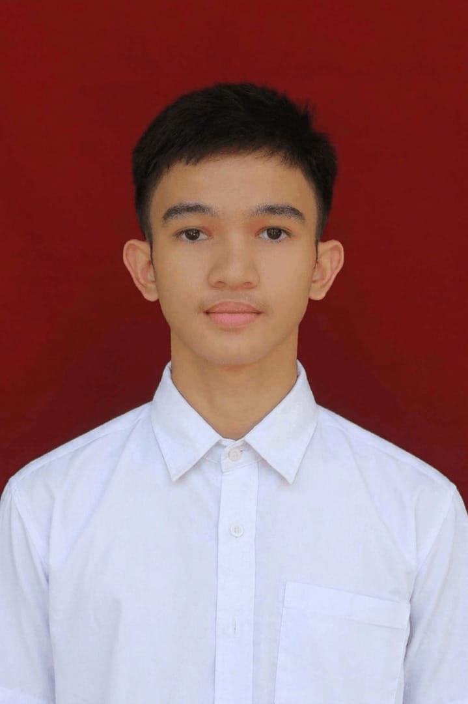

2014 — 2020
PENDIDIKAN DASAR
MIN 1 Tapanuli Tengah
Awal perjalanan belajar dan membangun fondasi pendidikan.
MAHASISWA ILMU KOMPUTER · MEDAN
Merangkai logika, teknologi, dan rasa ingin tahu untuk membuka peluang yang lebih luas.

01 / TENTANG SAYA
Saya M. Fathan Zaaid Pohan, mahasiswa Program Studi Ilmu Komputer di Universitas Negeri Medan. Saya tertarik pada dunia teknologi dan terus mengembangkan diri melalui pengalaman belajar.
Saya memilih Ilmu Komputer karena bidang ini memiliki peluang kerja yang luas. Bagi saya, pendidikan adalah ruang untuk membangun fondasi, mencoba hal baru, dan menyiapkan diri menghadapi berbagai kemungkinan.
02 / PENDIDIKAN
Dari Barus hingga Medan — perjalanan yang membentuk rasa ingin tahu dan tujuan saya.
PENDIDIKAN DASAR
Awal perjalanan belajar dan membangun fondasi pendidikan.
PENDIDIKAN MENENGAH PERTAMA
Mengasah kedisiplinan, ketekunan, dan semangat berprestasi.
PENDIDIKAN MENENGAH ATAS · JURUSAN IPA
Memperdalam ilmu pengetahuan alam dan meraih pencapaian akademik.
PERGURUAN TINGGI · MEDAN
Fakultas Matematika dan Ilmu Pengetahuan Alam
Jurusan Matematika
Program Studi Ilmu Komputer
03 / PENCAPAIAN
Setiap pencapaian adalah pengingat untuk terus belajar dan melangkah lebih jauh.
AKADEMIK · MAN 1 TAPANULI TENGAH
Kelas X-B, semester ganjil 2023/2024
AKADEMIK · SMP MUHAMMADIYAH 28 BARUS
Kelas VIII-A, semester genap 2021/2022
04 / DI LUAR KELAS
Belajar dan bertumbuh juga terjadi di luar ruang kelas — bersama teman dan melalui minat yang berbeda.
05 / TERHUBUNG
Ikuti cerita dan perjalanan saya di media sosial.